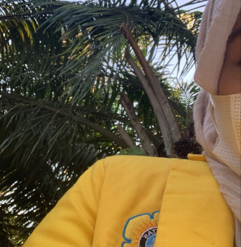

Apa saja tentang ifemm

Femi yang mau otw magang dan pengenalan tempat magangnya dan hari senin paling sibuk
Liat senyummu di foto ini, rasanya tenang banget...


Meskipun wajahnya lagi manyun dan belum senyum, tetap aja manisnya nggak ilang...
Femi yang mau otw magang dan pengenalan tempat magangnya dan hari senin paling sibuk
Liat senyummu di foto ini, rasanya tenang banget...
Meskipun wajahnya lagi manyun dan belum senyum, tetap aja manisnya nggak ilang...